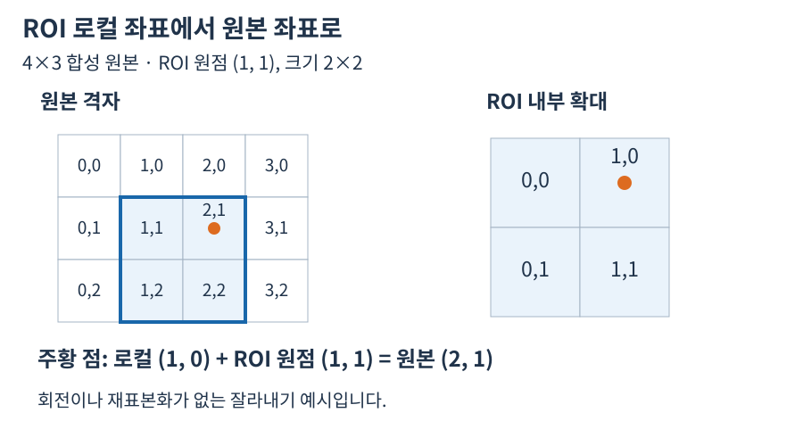

3. 지역 좌표와 전역 origin
첫 번째 ROI가 (1,0,3,3)이고 그 위에 다시 ROI (1,1,2,2)를 적용했다면 최종 ROI는 origin=(2,1), 크기 2×2입니다. 해당 ZImage의 지역 (0,0)은 원본 전체 (2,1)입니다. 실제 Rust 테스트는 stride 6바이트와 내부 offset 8바이트를 포함한 이 중첩 상황을 검증합니다.


판독 기준
- ROI 크기는 2×2이고 좌표는 0부터 시작합니다.
- 회전이나 크기 변환 뒤에는 이 단순 덧셈만으로 복원할 수 없습니다.
수치와 도형은 연결된 계약의 핵심 관계를 설명하는 예입니다. 실제 SDK 출력으로 명시한 자료를 제외하면 실행 결과나 장비 실측으로 해석하지 않습니다. 좌표계·입력 형식·수명과 오류 조건은 관련 API 계약을 확인한 뒤 적용하세요.
use zvision::{ZImage, ZRect};
fn main() -> zvision::ZResult<()> {
let source = ZImage::from_vec_gray8(4, 3, vec![
0, 1, 2, 3, 4, 5, 6, 7, 8, 9, 10, 11
])?;
let first = source.roi(ZRect::new(1, 0, 3, 3))?;
let nested = first.roi(ZRect::new(1, 1, 2, 2))?;
assert_eq!(nested.origin(), (2, 1));
assert_eq!(nested.to_packed_vec()?, vec![6, 7, 10, 11]);
Ok(())
}원리와 입력
ROI 안의 로컬 좌표는 선택된 좌상단에서 다시 (0,0)으로 시작합니다. origin은 그 좌상단이 상위 영상의 전역 좌표에서 어디에 있는지 나타냅니다. 예를 들어 origin이 (1,1)이고 ROI 로컬 측정점이 (1,0)이면 전역점은 (2,1)입니다. 먼저 원하는 표시 대상이 ROI 화면인지 원본 화면인지 정하면 어느 좌표를 써야 할지 분명해집니다.
적용과 확인
중첩 ROI에서는 각 단계의 시작점을 원본 기준으로 계산한 결과를 최종 origin으로 다뤄야 합니다. 이미 전역 좌표인 결과에 origin을 다시 더하면 위치가 한 번 더 밀립니다. 매칭 결과는 로컬과 글로벌 위치를 별도 제공할 수 있으므로 결과 필드의 계약을 확인하세요. 좌표가 영상 경계 안에 들어간다는 사실만으로 프레임이 맞았다고 볼 수는 없습니다. 합성 영상에서 모서리와 중심 두 점을 표시해 보는 방식이 원점 누락과 중복을 식별하는 데 유용합니다.
값과 판독 기준
| 단계 | 입력 또는 결과 | 확인할 점 |
|---|---|---|
| origin | (1,1) | 전역 위치 기준 |
| 로컬 점 | (1,0) | 선택 영역 안의 좌표 |
| 전역 점 | (2,1) | origin을 한 번 더함 |
| 주의 | 이미 전역인 결과 | 원점을 다시 더하지 않음 |